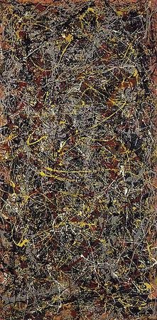

No. 5, 1948
Jackson Pollock · 1948 · Oil on fiberboard · 8 × 4 ft · Private collection
In copyright. Look and learn: shown for study, not for download.
Alfonso Ossorio paid $1,500 for this board at Pollock's solo show at the Betty Parsons gallery in January 1949, and it was the only picture sold from that show. It was damaged on the way to him, when a patch of paint slid off the centre, and according to Grace Hartigan, Pollock repainted the whole thing. The board measures eight feet by four. David Geffen sold it privately in 2006 for $140 million, the highest price paid for a painting until 2011.